OVERVIEW
The Department of Science and Humanities at Kingston Engineering College houses three state-of-the-art laboratory facilities designed to provide students with hands-on practical experience across multiple engineering disciplines. The Chemistry Laboratory, Computer Science & Engineering Laboratory, and Engineering Graphics Laboratory collectively support the foundational curriculum for all engineering programs.
These labs are equipped with modern instruments, high-performance computing systems, CAD workstations, and industry-standard software to bridge the gap between theoretical concepts and real-world application across all engineering domains. Students gain practical knowledge in chemical analysis, computational problem-solving, and technical drawing through project-based learning and guided experimentation.
CHEMISTRY LAB
The Chemistry Laboratory serves as the primary experimental hub for engineering chemistry courses. It features spacious workbenches with individual student stations, a fume hood for safe handling of volatile substances, and a comprehensive collection of analytical instruments. Students perform experiments related to water quality testing, pH metric and conductometric titrations, potentiometric analysis, and spectroscopic determinations. The lab also supports project-based learning and interdisciplinary research activities for both undergraduate and postgraduate students.
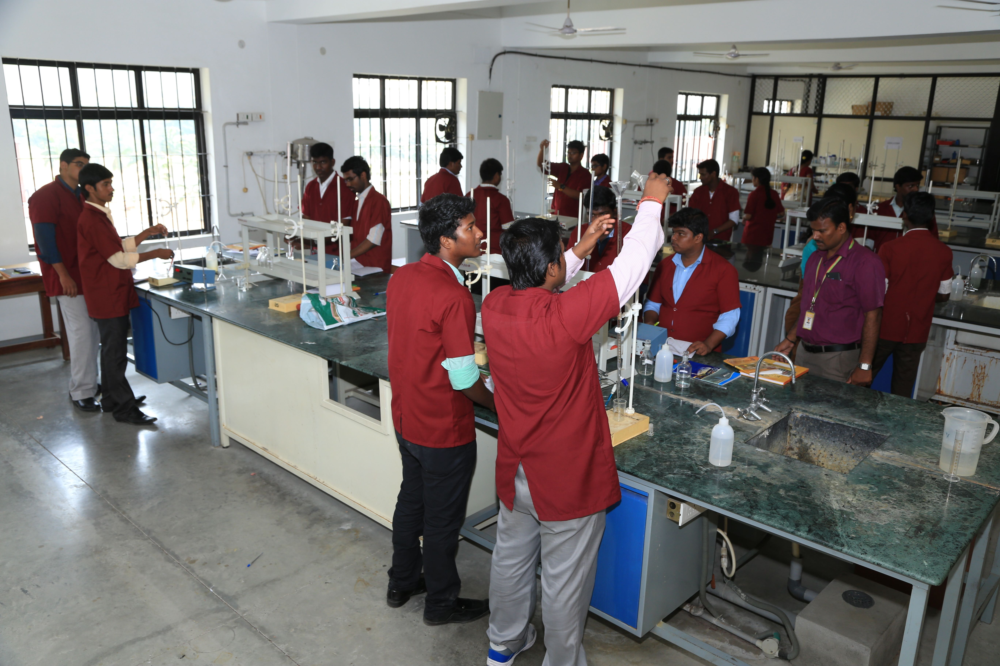
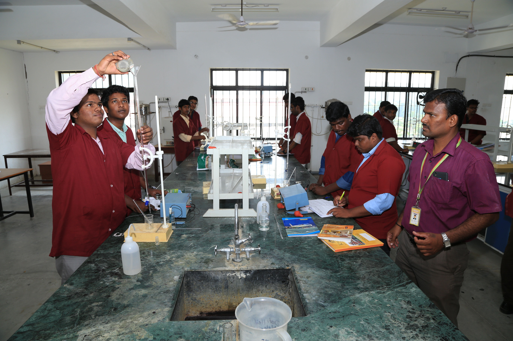
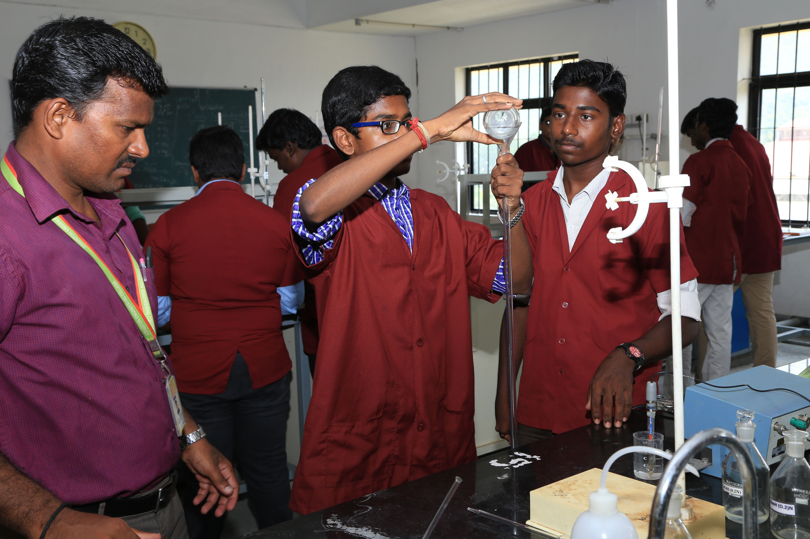
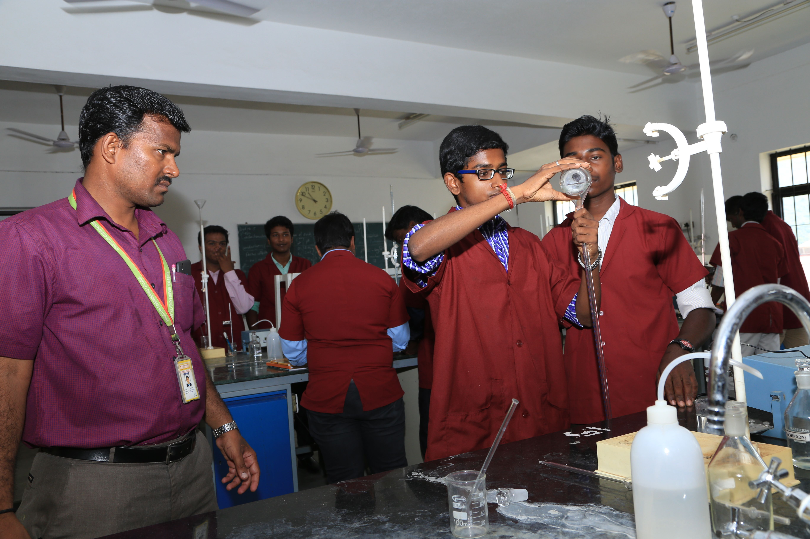
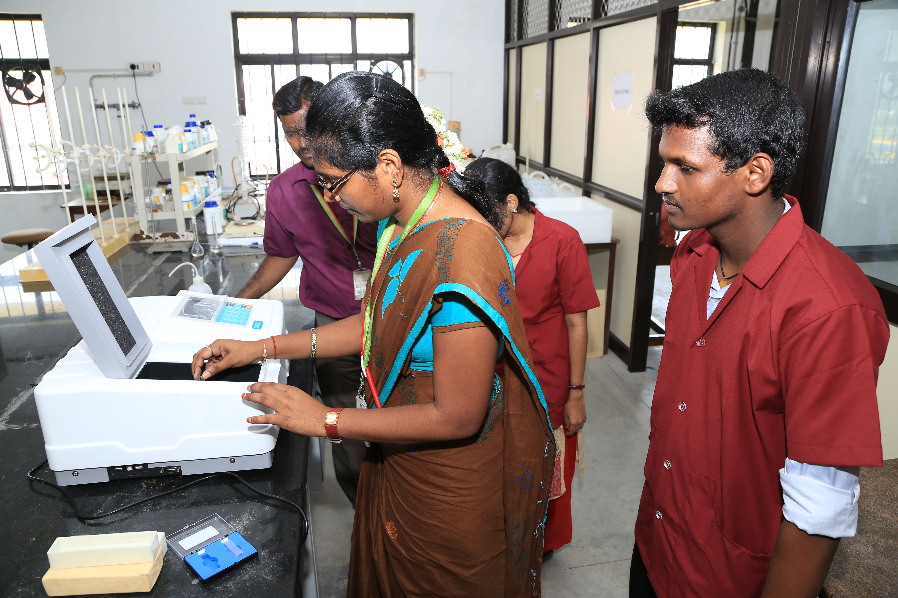
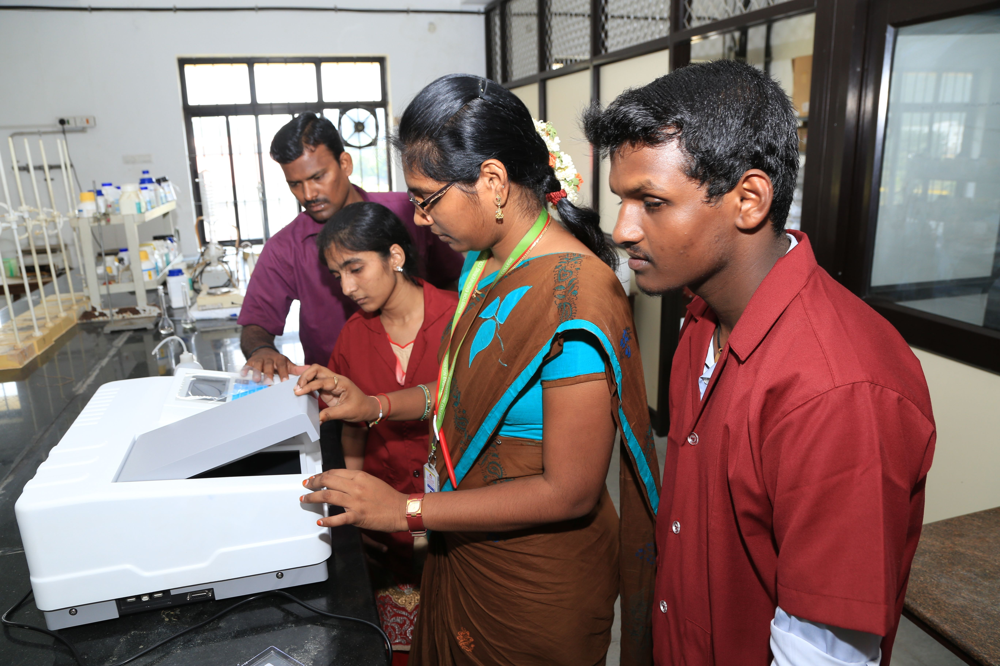
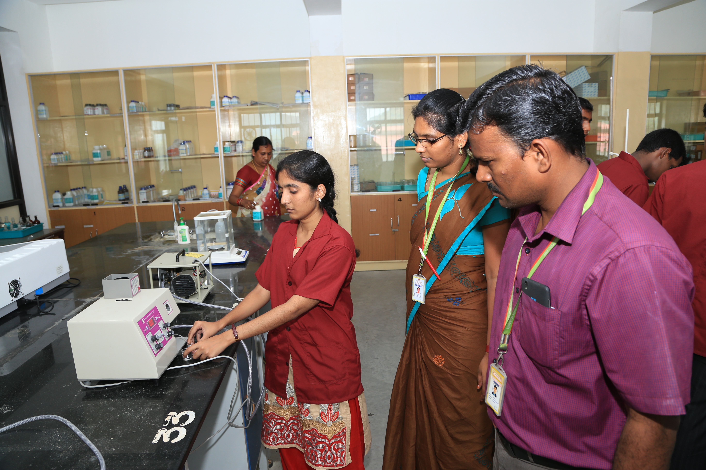
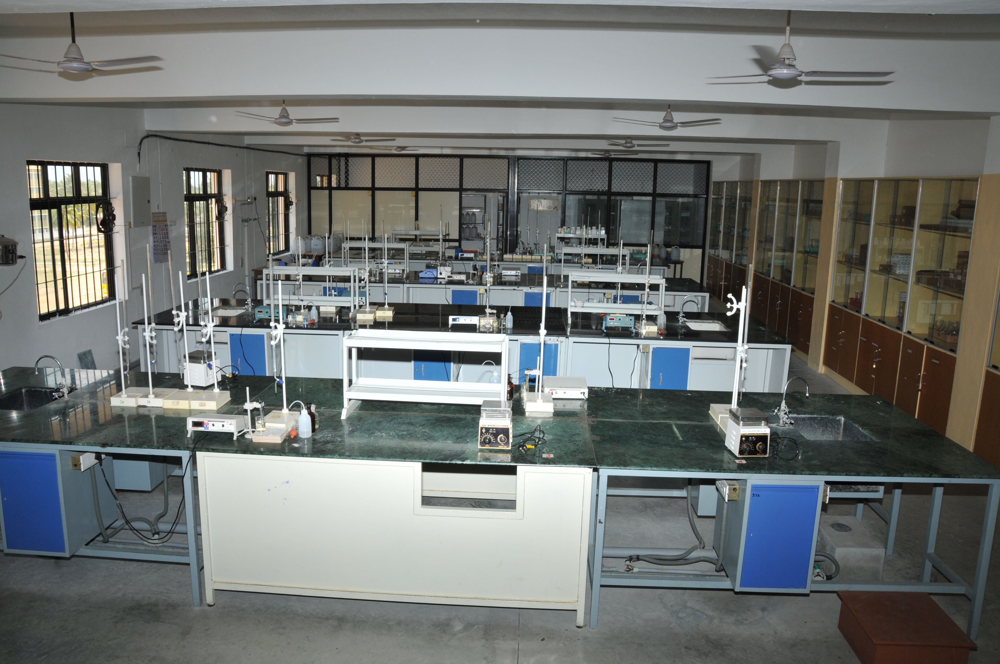
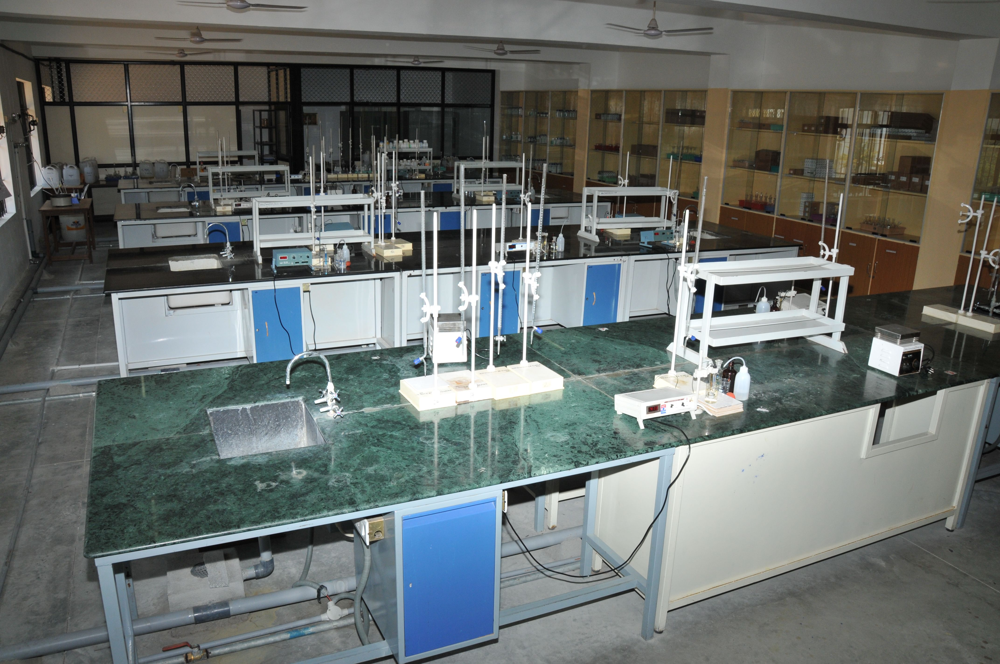
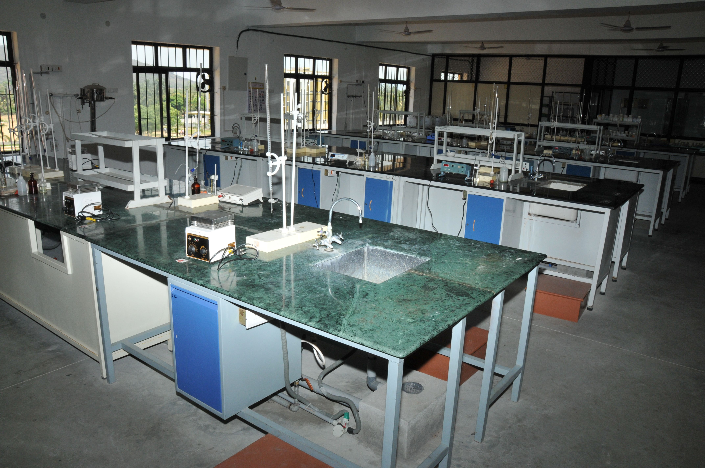
Key Equipment & Capabilities: Digital pH meters, conductometers, potentiometers, UV-Visible spectrophotometer, electronic balances, muffle furnace, hot air oven, distillation units, fume hood, magnetic stirrers with hot plates, water bath, and complete range of laboratory glassware and chemicals for engineering chemistry experiments.
CSE LAB
The CSE Laboratory serves as the primary computing hub for engineering students, featuring high-performance workstations with the latest processors, adequate RAM, and SSD storage. The lab supports courses in programming, data structures, database management systems, web technology, and software engineering. It serves as the training ground for programming languages and modern development frameworks, helping students build the computational skills necessary for their core engineering disciplines. The lab also runs specialized sessions for competitive programming and project-based learning.


Key Equipment & Capabilities: High-performance workstations with latest Intel/AMD processors, networked environment with high-speed connectivity, licensed software including programming IDEs, database management systems, web development tools, and open-source development platforms for comprehensive computing education.
ENGINEERING GRAPHICS LAB
The Engineering Graphics Laboratory serves as the primary drafting and design hub for engineering students, featuring spacious drawing tables with individual student stations, high-performance CAD workstations, and a comprehensive collection of drafting instruments and models. Students perform exercises in manual drafting, computer-aided design using industry-standard software, solid modeling, and assembly drawings. The lab supports project-based learning and helps students develop the essential graphical communication skills required for all engineering disciplines.
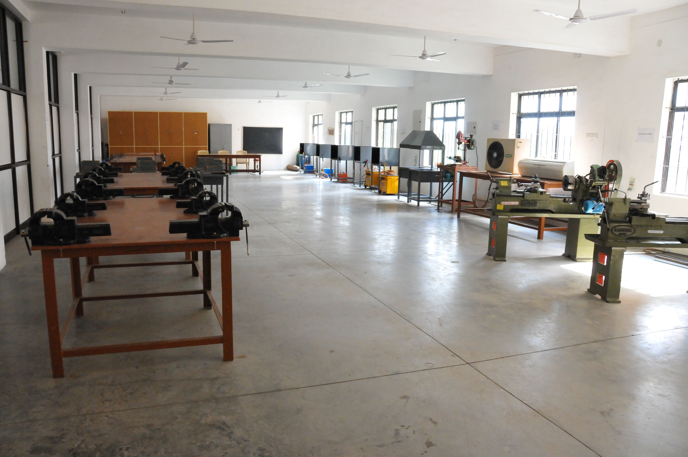
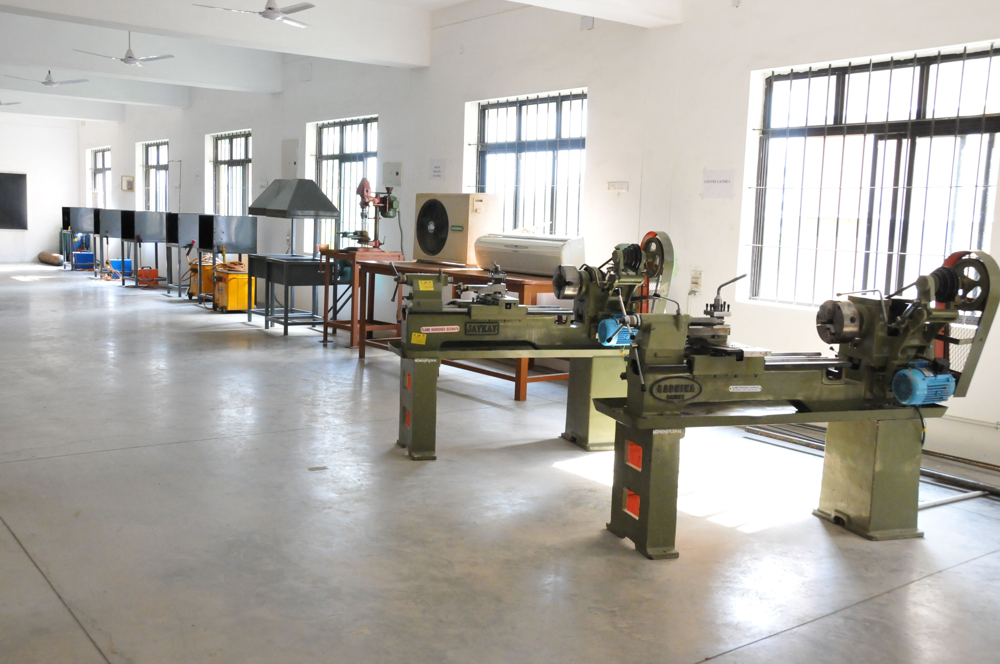
Key Equipment & Capabilities: Professional drafting tables, CAD workstation computers with licensed AutoCAD and SolidWorks software, drawing instrument sets, model collection for orthographic and isometric projection practice, large-format plotter for printing engineering drawings, and digital projection systems for instructional delivery.